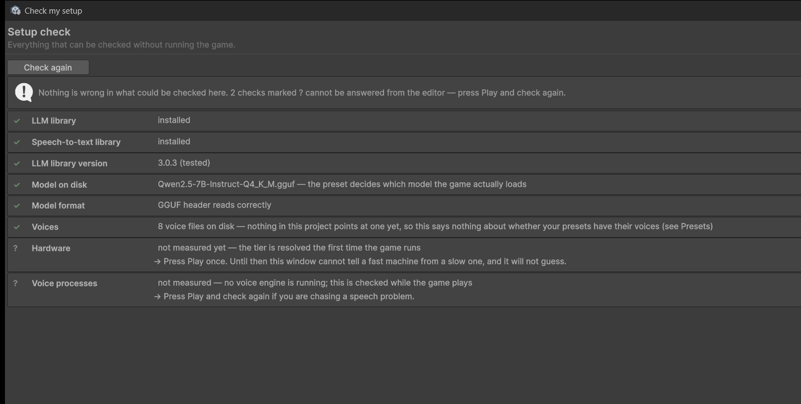

Troubleshooting
Ordered by how often it happens. Every message below is a string the plugin actually emits — search for it here before searching the internet.
First, always: Tools ▸ Offline AI NPC ▸ Check my setup. It reports what is missing and what to do about it, and it distinguishes "this is broken" from "this could not be determined" rather than guessing.

This is what a failure looks like: the check that failed is red, and the line under it is the fix rather than a restatement of the problem. Match your window to this one before reading further — most of what follows is the long form of a line in that list.
Four markers, and the fourth is the one worth knowing:
| Means | |
|---|---|
| ✓ green | checked, and fine |
| ! amber | works, below the intended quality or speed |
| ✕ red | cannot work until you fix it |
| ? grey | nobody has measured this yet — not a pass |
The grey ones are questions the editor cannot answer: your hardware tier before the game has ever run, the speech processes before one is up. Press Play once and check again. Grey is deliberately not green — "not measured" and "all good" must not look identical.
The character speaks in the subtitle but there is no sound
By far the most common, and it produces no error at all.
A Piper voice is a pair of files. Download both; the model alone loads and then says nothing.
A Piper voice is name.onnx and name.onnx.json. With the .json missing the engine starts, reports itself ready, and synthesises silence.
Fix: download both files into the voices/ folder. The setup check flags an unpaired voice.
No model weights found
[OfflineAINPC] No model weights found. Expected one of: …
The tier system resolved a tier, asked the catalogue for that tier's model, and the file is not on disk.
Fix: open Tools ▸ Offline AI NPC ▸ Model Manager and download the preset for your language and tier, or place the .gguf in StreamingAssets under the exact file name the message lists. A renamed file is not found — the name in the manifest is the name on disk.
The character never says anything, and push-to-talk stops working
Almost always the busy lock. If your controller sets a _busy flag and an early return, an exception or a cancelled coroutine skips clearing it, the character is locked out for the rest of the session, silently.
Fix: release it in a finally, on every path. See Dialogue. This is the single most common integration bug in this codebase's own history.
Replies are much slower than the documented figures
Check, in this order:
- Is something else generating? Background conversation costs about 5× — see Limitations.
- Is this the first turn? The first reply of a session is ~2.1 s while the prompt cache fills. Warm it during a loading screen.
- Is the prompt changing every turn? A changed system prompt discards the cache and pays the cold cost again. Build it once.
- Which tier resolved? The startup log says so:
Startup verdict: tier Standard; model qwen3-4b-q4km, 36 GPU layers. A machine that fell to a lower tier is running a smaller model on fewer GPU layers, and will be slower per token than the reference figures.
The engine is not ready, or the process died
A speech process died or failed to start. The plugin restarts one automatically within its restart budget.
Piper occasionally dies mid-synthesis. Recovery is automatic: a dead voice is re-spawned on its next request, and a watchdog re-spawns the default voice. The budget is three restarts per minute; past that the engine reports itself not ready and logs once rather than looping.
What you lose: the reply in flight, not the session.
If it happens constantly: the voice file is likely corrupt or truncated. Re-download it and check the file size against the model card.
VOICEVOX says it is not ready
VOICEVOX is a separate application with an HTTP server, and it takes time to boot. The plugin retries a health check and flips to ready when the server answers.
Fix: start VOICEVOX before entering Play mode, or wait — it will connect on its own.
A dependency is missing
Install LLM for Unity (package id
ai.undream.llm). Without it there is no model to talk to.
Install whisper.unity (
com.whisper.unity) to accept voice input. Typed input works without it.
Both are external and free. The plugin compiles without either — the features that need them are compiled out through versionDefines, so a missing dependency is a missing feature and never a compile error.
It may work. If generation misbehaves, try one of the tested versions before reporting a bug.
You are on a version this plugin has not been tested against. Usually fine.
The character talks about furniture that is not there
Perception is off. Measured in the same scene: with it off the character mentioned a fireplace, a window seat and a cat, none of which existed; with it on she spoke only about real objects.
Fix: see Perception. Also check pivots — an object whose pivot sits at y = 0 while its body is a metre up traces occlusion from the floor and reads as hidden. That made half of one scene's furniture invisible to perception.
The character ignores "reply in one short sentence"
Expected. Small models do not honour worded length limits. The token ceiling and the sentence limit are what actually keep replies short.
Fix: lower the ceiling in the language definition's length rule, not the wording in the persona.
A language switch produces the wrong voice, or an English reply
Two different causes:
- Wrong voice, right language: the language has no voice bound for its code in the engine binding table. The manager logs which codes it has: `No engine bound for 'ko'. Bound languages: ja, en, es, ru`.
- Right voice, wrong language of reply: the voice was switched but the prompt was not. Switch through your language manager so the system prompt is rebuilt, not through the TTS manager alone. This one hides well — the voice is correct both times, so the switch looks like it worked and only the words are wrong.
The transcript comes back in a script nobody spoke, or as bracketed sound words
the player said "do you hear me" and the box filled with
(シャッ)(シャッ)(シャッ)(シャッ)
Two separate faults, and they arrive together often enough to look like one.
- Wrong script:
WhisperManager.languageis set to a language the player is not speaking. Recognition does not refuse a mismatch — it transcribes what it heard using the language it was told to expect, so English audio under a Japanese setting comes back as Japanese sound-words. Set the language to what your players speak; if you copied your speech setup from another scene, check this field first, because everything else in that setup copies correctly and only this one is scene-specific. - Bracketed sound words: recognition annotates non-speech —
(coughs),[BLANK_AUDIO],*sighs*,♪— and a run of those is not short, not silent, and not a known hallucination, soUtteranceGatepasses it. **The gate does not strip annotations, by design:** it judges whether somebody spoke, and someone who coughs before a real question did speak. Deciding what to do with the annotation is the caller's, because a game that shows a transcript and a game that feeds one to a model want opposite things.
Fix for the second: strip annotations before you call Inspect(text, language), and treat a line that is only annotation as nothing said. Removing the brackets rather than rejecting the line matters — (coughs) where were you on the fourteenth is a real question with a cough in front of it. The demo does this in Transcript.Clean, which is thirty lines of pure C# you can copy.
Verification says a language is not configured
'ko' is not one of the languages this project configures (it configures en, ja, es, ru)
Correct and deliberate. Ask LanguageRuntime.IsConfigured(code), which answers about the catalogue. Do not use Find/FindOrDefault for that question — they fall back to the default language, so an unconfigured code comes back looking supported.
Live verification cannot check dialogue
Voices audition from the editor. Dialogue does not: the language model is constructed in Start() and its continuations only run inside the player loop.
Not a bug. Enter Play mode for dialogue checks.
Still stuck
Tools ▸ Offline AI NPC ▸ Diagnostics produces a report you can paste into a support request: hardware, tier, model, dependency versions, what is installed and what is missing. It contains no personal data and is not sent anywhere — the plugin has no telemetry of any kind.